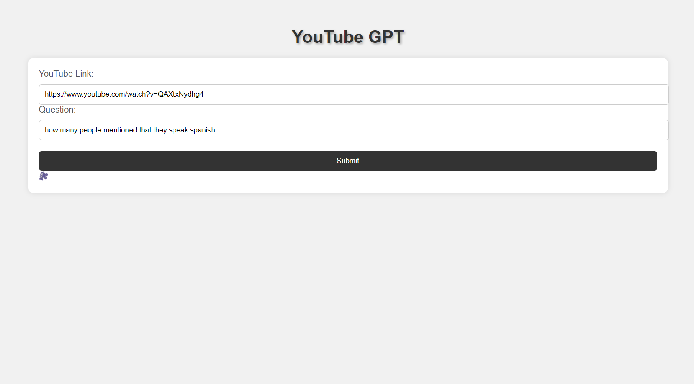
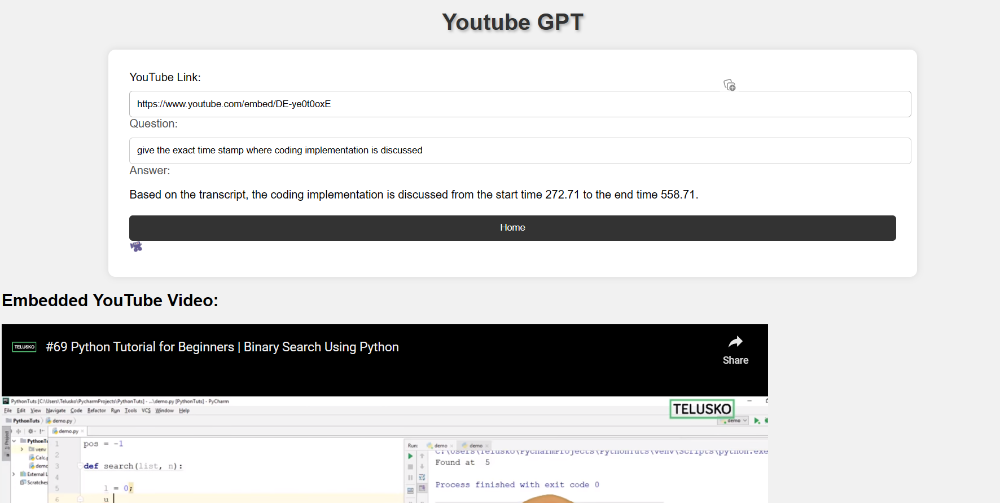

Youtube GPT
- This application is used to get information from YouTube videos by asking questions.
- GPT 3.5 model from OpenAI is used for answering by looking into the transcript of the video.
Usage
- Users should input the YouTube link in the text field.
- For example, there is a video titled "Harvard, how many languages do you speak?", asking students how many languages they speak.

After submitting:

Another example:
- This video is from Telusko YouTube channel that explains binary search in Python.
- We can even ask for the timestamp where any topic is discussed.

As we see above, it gives the timestamp where the coding implementation is starting.
Conclusion
- This works well for 30-minute videos but has not been checked for 1-hour videos.
- GPT 3.5 context length is up to 16K tokens, so it is not guaranteed to work for 1-hour videos.